手机搭建ipv6代理服务器实现远程访问家庭设备
前言
因为出门在外经常需要访问家庭设备比如NAS、服务器、远程桌面等。然而，公网 IPv4 地址的稀缺和运营商的封闭策略，让传统方式变得越来越困难。好在如今不少运营商已经默认分配 IPv6 地址，我们可以借助 IPv6 网络的特性，搭建自己的远程代理服务器，实现无需公网 IPv4 的远程访问。一开始的时候，我是直接用设备的IPV6来进行远程桌面的，但是又觉得暴露在公网的RDP服务多少会有些不安全，尽管IPV６的地址很难扫描到，思考了一下打算用代理的方式来访问，相当于加多了一道门。
原理图
大致画了一个原理图是这样的，外部设别直接IPV６访问到手机代理服务器，然后手机代理服务器通过IPV４访问家庭其它设备。
为什么用手机而不是用其它电脑设备：因为刚好有闲置的手机，手机就算一天２４小时开机也耗费不了多少点，关键是还静音！！
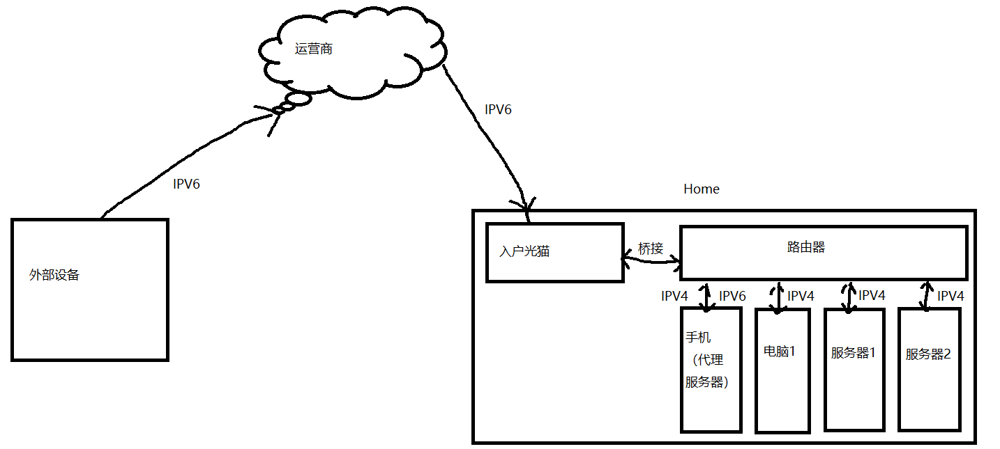
环境准备：手机端工具termux
1 | https://github.com/termux/termux-app/releases/download/v0.119.0-beta.2/termux-app_v0.119.0-beta.2+apt-android-7-github-debug_universal.apk |
或者新手可以使用这个：https://github.com/hanxinhao000/ZeroTermux
我这里下载的是termux；然后安装成功之后直接打开，第一次打开可能会闪退，第二次打开没问题。
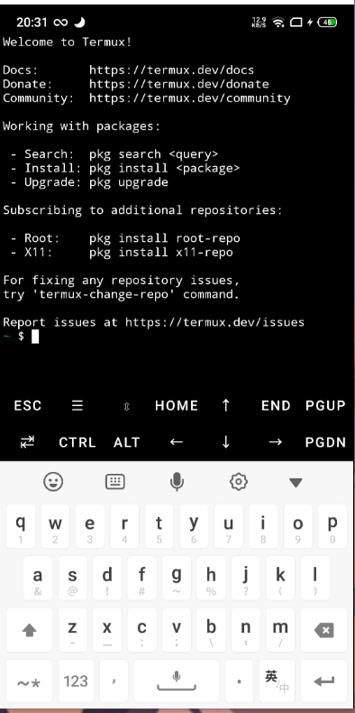
安装sshd，方便我们直接ssh远程手机
1 | pkg install -y openssh |
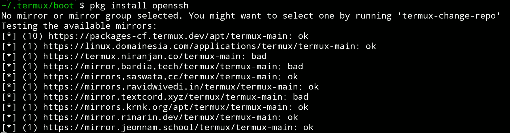
然后psswd设置一下密码
1 | passwd |
ssh连接手机，IP就是手机的IP地址，端口默认为8022
1 | ssh -p 8022 192.168.1.82 |
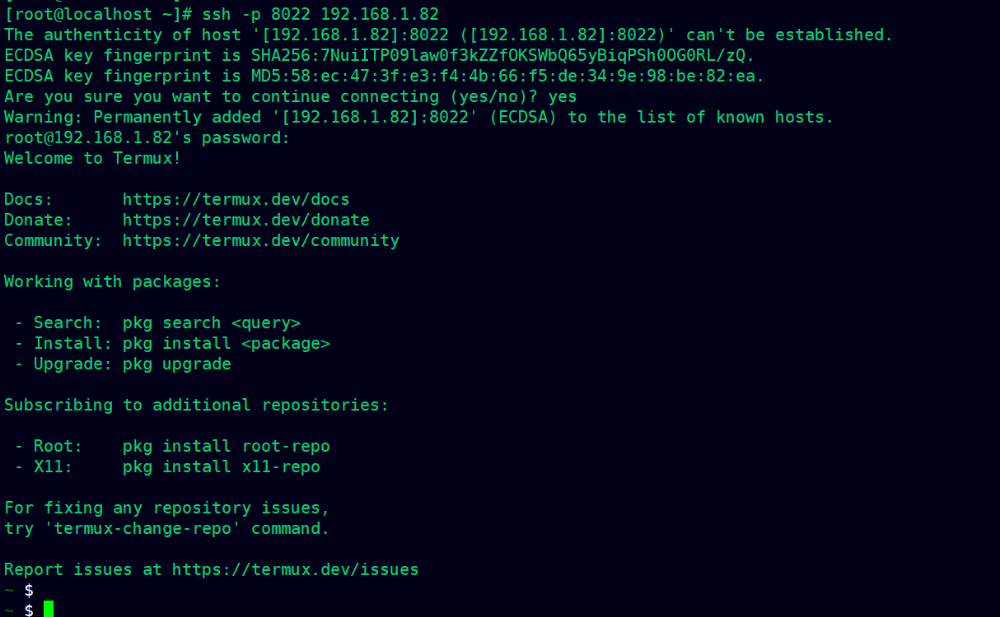
安装wget
1 | pkg install -y wget |
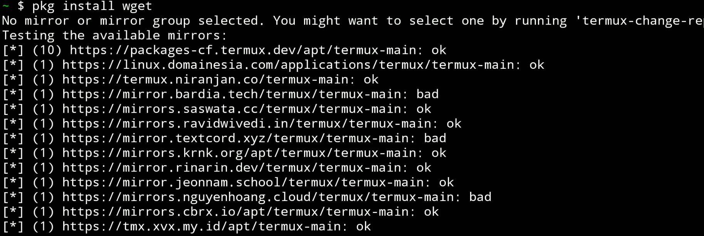
安装 Hysteria：高性能代理服务器部署
1 | wget -N --no-check-certificate https://raw.githubusercontent.com/flame1ce/hysteria2-install/main/hysteria2-install-main/hy2/hysteria.sh && bash hysteria.sh |
提示需要root权限；在有root的普通服务器很快就能安装成功。（原本打算用脚本一下搞定，但是这台手机没有root）
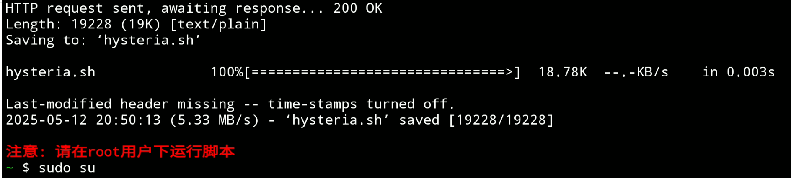
不用脚本了，我们直接下载编译好的二进制文件进行安装
1 | https://github.com/apernet/hysteria/releases |
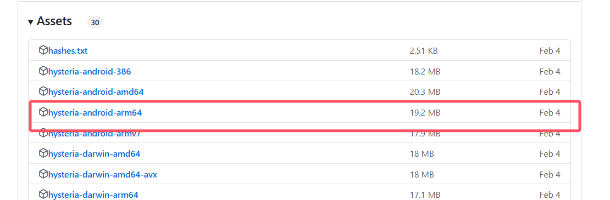
1 | listen: :26678 |
下面这三个文件需要从安装好的地方把它们下载到手机
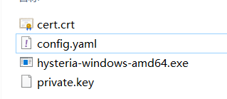
启动
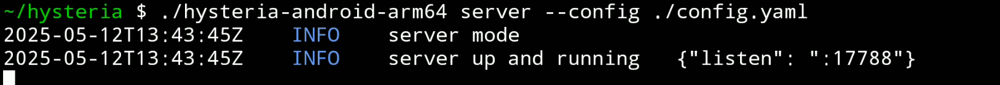
下载ddns-go
因为IPV6会变化，所以我们给它绑定一个域名，动态获取我们的IP地址。
ddns-go下载到手机
1 | https://github.com/jeessy2/ddns-go/releases |
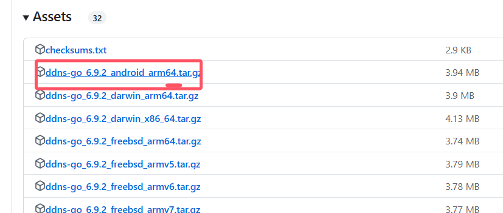
在这里可以注册一个免费的域名：https://dynv6.com/下面会用到这个域名。
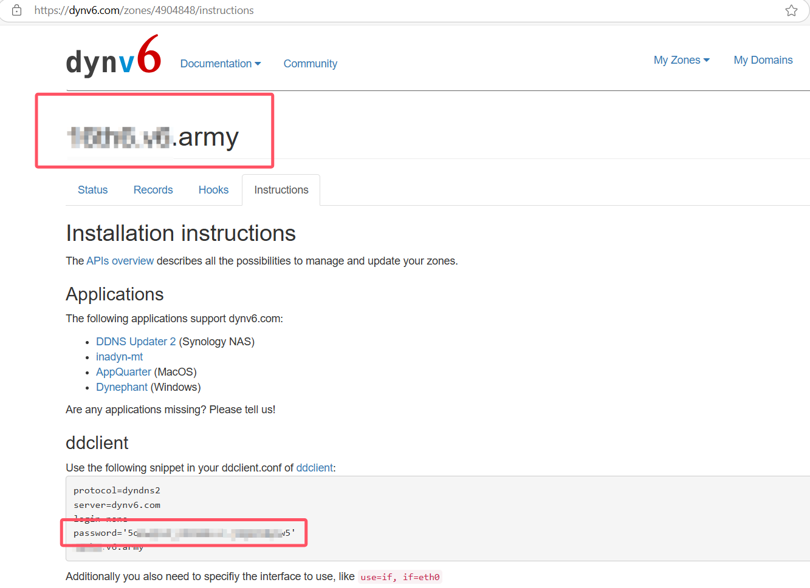
脚本启动服务
直接写了一个脚本可以一键启动：start-services.sh
1 |
|
检查一下服务，确认都在正常运行.
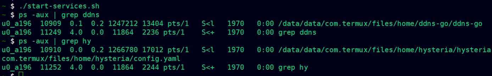
配置ddns-go
访问http://你的IP:9876，然后设置密码登录。
选择Callback，输入URL，RequestBody为空。
1 | http://dynv6.com/api/update?zone=#{domain}&token=你注册的密码&ipv6=#{ip} |
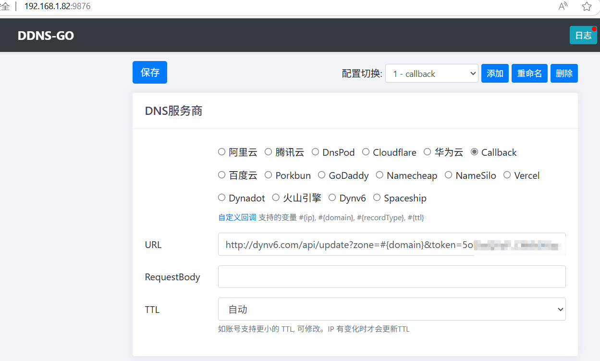
IPV4不用开启，直接设置IPV６，然后保存。
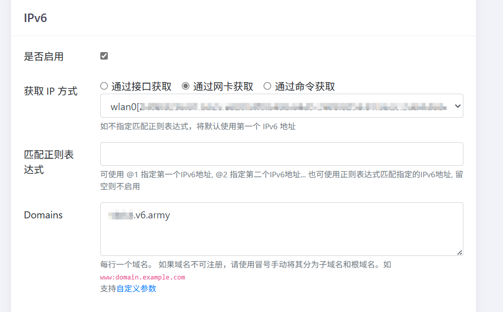
最后尝试ping一下，成功解析了我们的IPV6地址，并且是一个2408开头的公网IP
1 | ping -6 你的域名 |
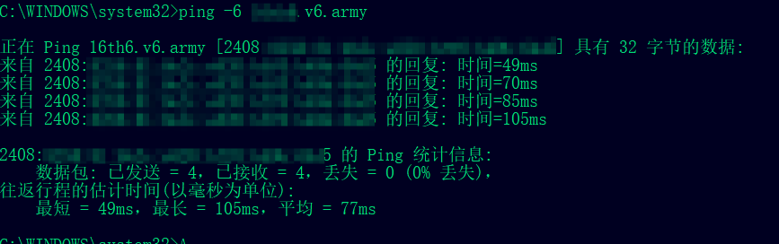
ClashVerge 配置：在客户端使用代理访问家庭设备
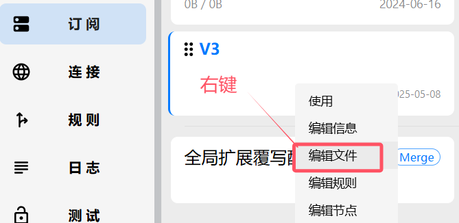
我这里草率的配置了一份进行测试，详细的配置的话，可以实现挂一个代理就可以同时访问家庭设备也可以科学上网以及直接国内网络。
1 | port: 7890 |
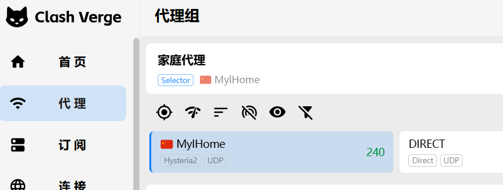
开启tun模式，直接劫持我们cmd的流量，直接就可以ping通我们内网的设备。（注意连代理的设备也要有ipv6网络）
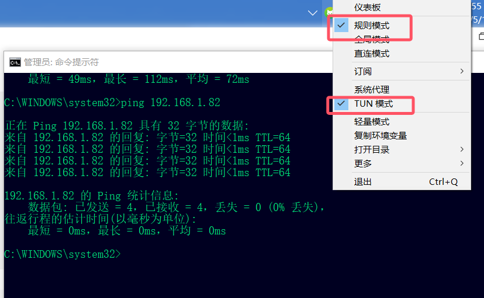
总结
通过本文的操作，我们成功实现在没有公网 IPv4 的情况下，借助公网 IPv6 网络和 Hysteria 协议，搭建起一个轻量级、高性能的代理服务器，实现从外网远程访问家庭内网设备的目标。这种方式不仅部署简单、成本极低。
从攻防演练的角度看，这种技术路径也具有一定的启发性。在攻防演练中，使用 IPv6 隧道、 Hysteria 这类高性能代理协议，可以实现隐蔽的反向代理通信链路。相比传统的反弹 shell 或内网穿透工具，Hysteria 基于 UDP 协议，天然具备一定的抗封锁能力，适合构建更稳定的“外联”通道。